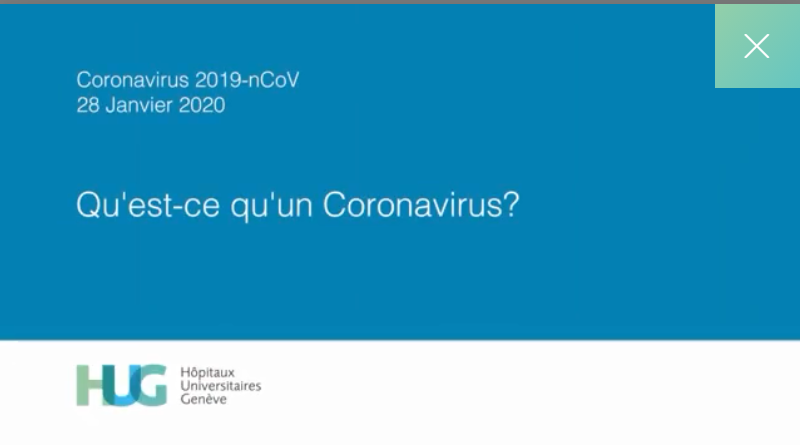
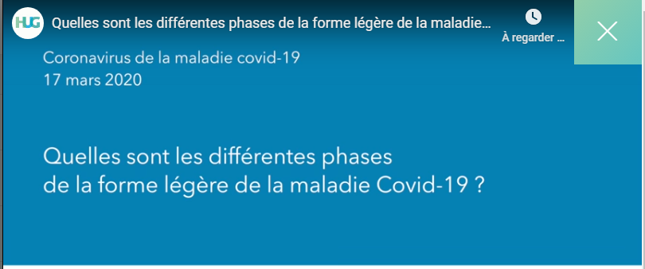
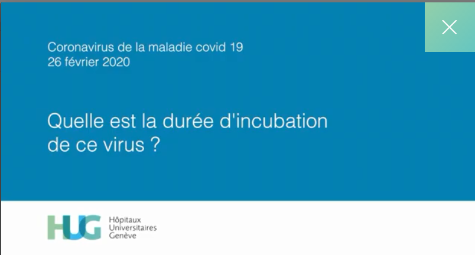
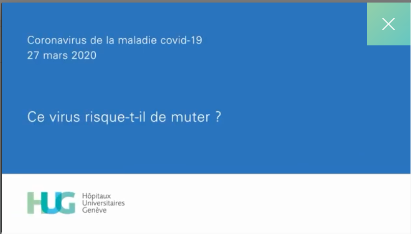

Qu'est-ce que le nouveau Coronavirus ?
 Qu'est-ce qu'un Coronavirus ?
 Quelles sont les différentes phases de la forme légère de la maladie du Covid-19 ?
 Quelle est la durée d'incubation de ce virus ?
 Ce virus risque t-il de muter ?